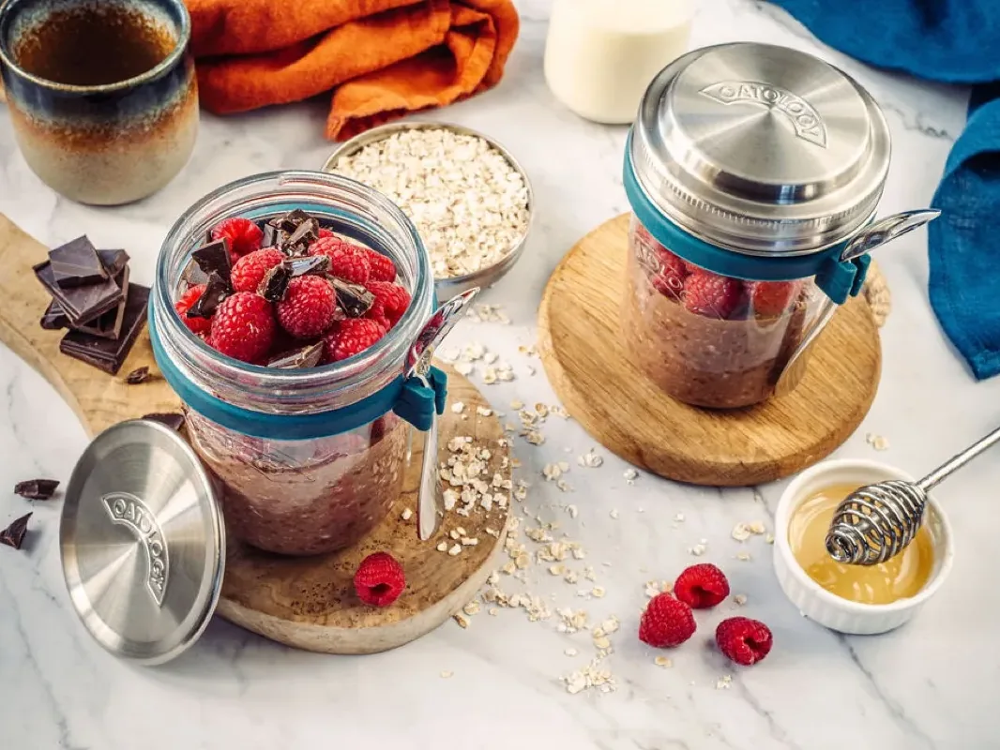
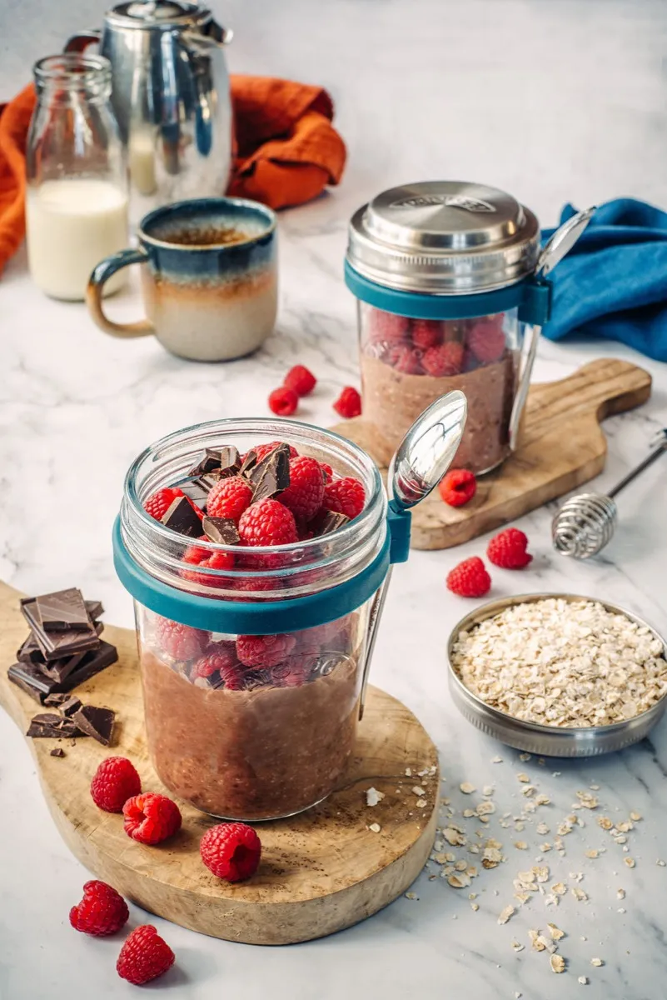
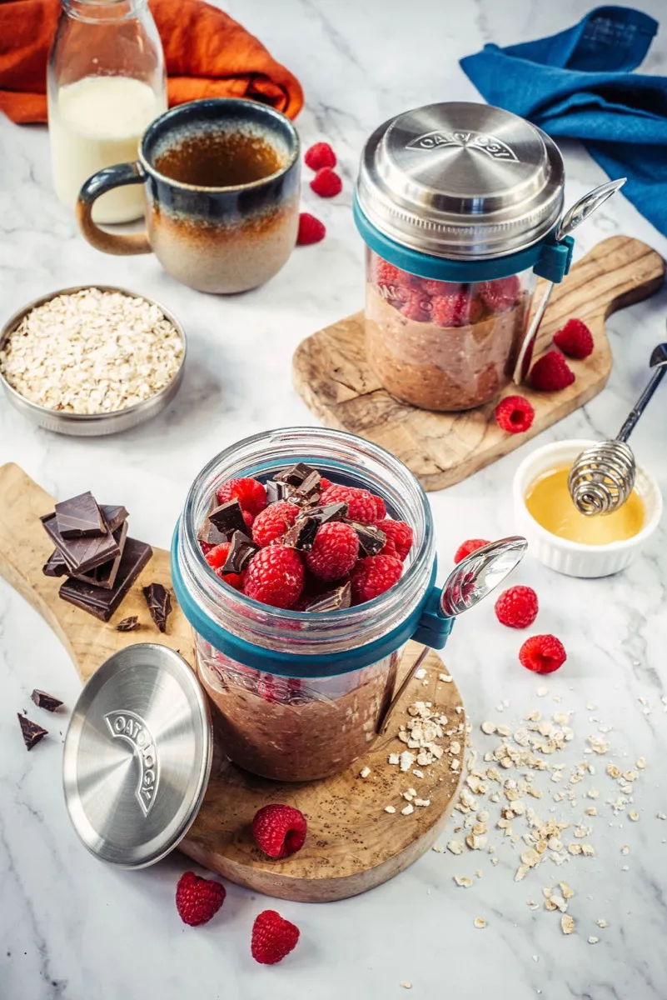

Chocolate & Raspberry Overnight Oats
Chocolate and raspberry overnight oats take about 5 minutes to prepare: stir 50g rolled oats, 150ml milk, 1 tbsp chia seeds, 1 tbsp Greek yoghurt, 1 tbsp cacao, and a spoonful of honey in a jar, then refrigerate overnight. By morning they are rich, chocolatey, and fruit-kissed, thick enough to eat with a spoon. One jar comes to roughly 500 calories, with about 18g of protein and 14g of fibre.
It is the recipe we reach for when a healthy breakfast needs to feel like a treat. The cacao deepens overnight, the raspberries cut through it, and a scatter of dark chocolate on top does the rest. 5 minutes of stirring tonight, and breakfast is sorted before the kettle has boiled.

The recipe
Ingredients
- 50g / generous ½ cup rolled oats (one lid)
- 150ml / scant ⅔ cup milk of choice (to the milk line)
- 1 tbsp chia seeds
- 1 tbsp Greek yoghurt
- 1 tbsp raw cacao or unsweetened cocoa powder
- 1 tbsp honey or maple syrup, to taste
- A pinch of sea salt
- A handful (about ½ cup) of fresh or frozen raspberries
- Dark chocolate chips or chopped dark chocolate, for topping
Method
- Add 150ml milk to the milk line on your jar.
- Measure and add one portion of oats (50g) using the lid.
- Add all remaining ingredients, except the raspberries and chocolate chips.
- Stir thoroughly until well combined.
- Cover and refrigerate overnight.
- Top with fresh raspberries and the chocolate chips before serving.
Tips and variations
- More protein: stir in a small scoop of chocolate protein powder, or an extra spoon of Greek yoghurt with a splash more milk.
- Make it vegan: swap the Greek yoghurt for plant yoghurt, the honey for maple syrup, and use dairy-free dark chocolate on top.
- Feeling indulgent: a spoon of hazelnut butter or a few extra chocolate chips tips it fully into dessert. We are not here to stop you.
The jar we make it in
Every recipe on this site is written around the OATOLOGY jar: the lid measures the oats, the milk line measures the milk, and the sealed lid means it travels without leaking. No scales, no guesswork. Your own jar works too, anything sealable with room for a good stir.
Get the OATOLOGY jar on Amazon 2-pack, amazon.co.uk Weighing up options? Our honest guide to overnight oats jarsYour questions, answered
What is the difference between cacao and cocoa powder?
Chocolate and raspberry overnight oats work with either cacao or cocoa powder: both are ground cocoa beans, so use whichever you have. Raw cacao is cold-processed and slightly more bitter, with a bit more fibre; cocoa powder is roasted and mellower. Use 1 tbsp of either, and skip drinking-chocolate powder, which is mostly sugar.
Are chocolate overnight oats good for you?
Chocolate and raspberry overnight oats are a genuine breakfast, not a dessert in disguise: made with semi-skimmed milk they come to roughly 500 calories, with about 18g of protein and 14g of fibre. The oats, chia, and raspberries carry the fibre, while cacao adds antioxidants. Your milk and how much honey you add will shift the totals.
Can you make chocolate and raspberry overnight oats vegan?
Chocolate and raspberry overnight oats are not vegan as written, because they use Greek yoghurt and honey. To make them vegan, swap the yoghurt for a plant-based one (coconut or soya both work) and use maple syrup instead of honey. Choose a dairy-free dark chocolate for the top and any plant milk for the 150ml.
Can you use frozen raspberries in overnight oats?
Chocolate and raspberry overnight oats work with fresh or frozen raspberries. Frozen ones thaw in the jar overnight and their juice bleeds into the oats, giving a rippled, deep-pink result; fresh raspberries hold their shape and look brighter on top. If you want the marbled look, stir a few frozen berries in and save fresh ones for serving.
How do you make chocolate overnight oats higher in protein?
Chocolate and raspberry overnight oats already carry about 18g of protein, and you can push past 25g easily. Stir in a scoop of chocolate or vanilla protein powder with an extra splash of milk, double the Greek yoghurt to 2 tbsp, or use high-protein soya milk for the 150ml. All three keep the texture thick and spoonable.
How long do chocolate and raspberry overnight oats last in the fridge?
Chocolate and raspberry overnight oats last up to 3 days in a sealed jar in the fridge, kept at 5°C or below (the Food Standards Agency's recommended fridge temperature). The cacao deepens by day 2 as the chia sets. Add fresh raspberries and a scatter of dark chocolate each morning rather than storing them on top.
A closer look

